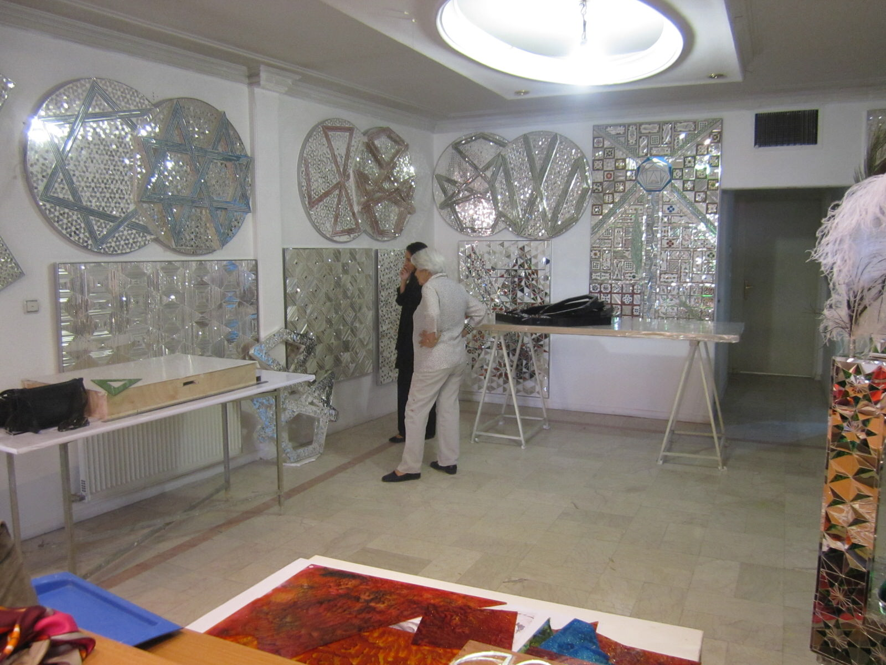
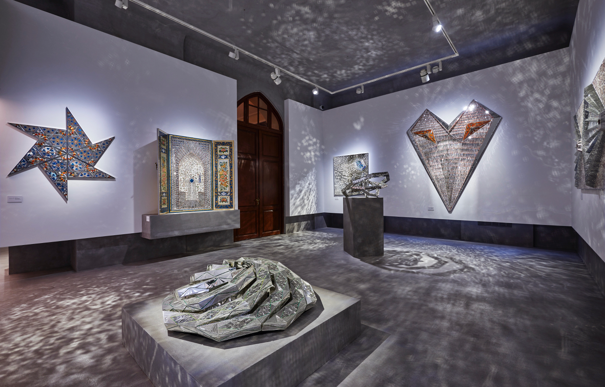
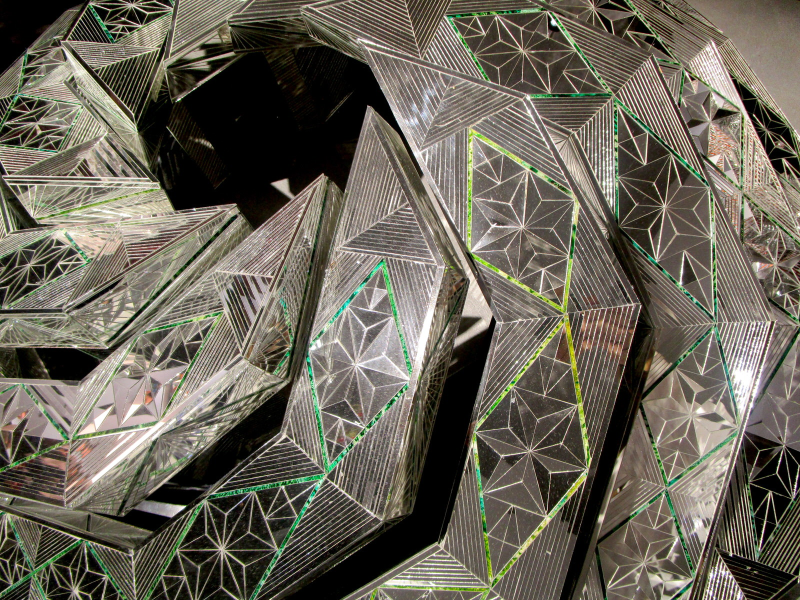

In the first of a two-part series, Myrna Ayad recounts her memories of the late Monir Farmanfarmaian, beginning with her early years in Iran through to the rise of her career.
I’m going to tell you about Monir the same way I imagine telling my daughter Noor about her when she’s old enough to understand. Noor will ask me why I’m smiling while I talk about Monir and I will say it’s because Monir was, very simply, phenomenal.
People know her as the nonagenarian artist who created mesmerising mirror sculptures, but most aren’t aware that it was her drawings – her delicate, delicate botanical drawings – that led to the mirror mosaics. Oh, those drawings… they look like fragments from a lace fabric, soft as a fine tissue. Some of them actually were – she had once gone for a check-up and liked the paper on the examination table, so asked the doctor for a roll to draw on. Spontaneity was an inherent facet of her character. It was a kind of a creative impulse, which translated so beautifully and thoughtfully into her work. Once, on a foggy morning at her home along the Caspian Sea, Monir’s eyes trailed the tracks of a bee crawling on the window. Mesmerised by the pattern that the insect had created, she decided to dip its legs in ink and place it on a sheet of paper. The “collaboration” as she called it, produced a series of ‘action’ drawings, charged full of concept and simultaneously, aesthetically delicate.
Yet, however instinctive Monir was, she was also deeply reflective and contemplative. You can feel it in her works – they are studied, meditative, thought-through, precise, and systematic. They may have been borne of an impulse, but their life became an organic organisation.

She drew since she was a child, and it is no wonder that Monir took to flora and fauna. She was born (1924) and raised for a time in Qasvin, in a family home with all the adornments of a traditional Persian house – stained glass windows, central pool, wind catchers, gardens, flower beds, grapevines and most memorably for Monir, a ceiling painted with roses and nightingales under which she slept. Monir scaled walls, hung from trees, fist-fought with her brother and earned the childhood nickname Hooshang – a christening by the family’s servants after her tomboyish, defiant attitude. When envisaging her childhood, one must not discount four glorious Persian seasons, their respective festivities and fresh produce. I think that her deep, deep love for Iran stems from her early life in that home, and intensified when the family moved to Tehran in 1932, not to mention of course, her travels across Iran in the 1960s.

Flora was so precious to her and she always kept it close. Even in her apartment on Fifth Avenue in New York, she created a mini garden on her balcony. Perhaps a momentous experience in her artistic career was the summer of 1945 at Cornell University. Fresh off the boat from Iran – literally – Monir had to draw live and that practice was wholly emancipating. She had graduated from the Fine Art Academy in Tehran, whose dean was Andre Godard, and where a large chunk of the curriculum was based on copying Greek and Roman figures from textbooks.
One ought to stop to consider the time: it is 1945 – the year the Arab League and the United Nations are formed, Hitler commits suicide and the Second World War is over, Mussolini is hung, nuclear bombs are dropped in Japan, Orwell publishes Animal Farm and Bob Marley and Anselm Kiefer are born. And in the same year, a Persian woman enrols at Cornell University before studying fashion illustration at the Parsons School of Design. Her arrival to the Big Apple was a supremely intelligent manoeuvre that mirrors the fastidiousness of her work – Monir was intent on studying in France, largely influenced by a French teacher, but France was at war, and America seemed the next best alternative. How does a young lady from a conservative Persian family arrive at the Land of Opportunity? Simple. She assembled a pack: her brother as chaperone, a fiancé (the Iranian modernist Manoucher Yektai), and his sidekick.
In New York, she became a fashion illustrator, a wife, a mother (to Nima) and then a single parent. Always armed with a sketchbook and known as that ‘exotic Persian lady’ for her looks and accent, she met and mingled with Andy Warhol, Alexander Calder, Frank Stella, Jackson Pollock, Milton Avery and a host of notable post-war others. Real love found her and brought her back to Iran in 1957. Her mother’s brother had foreseen it in her palm when she was girl: Monir would marry a prince and have two daughters, and indeed her second husband and the love of her life, Abolbashr Farmanfarmaian came from a long line of Qajar princes, and fathered Zahra.
Monir’s foray into the world of Islamic geometry and mirror mosaics is owed to her return to Iran. She spent a great deal of time discovering her country, traveling to remote places, meeting villagers and even began collecting Turkoman jewellery and traditional Persian coffeehouse paintings, both art forms she showed at several major museums (and which were looted during the 1979 Islamic Revolution).
When I think of Monir, there is one story that for me, really summarises who she was and what she represented: once, while driving between villages in a convertible car, Monir heard a faint beat in the air. She got closer and traced it to a tin can around which some labourers and refugees had circled, dancing and singing. In true Monir fashion, she stopped and joined the fun, dancing and singing, much to the delight of the ensemble. Cars stopped, Monir joined hands with the troupe and started to pass a hat to passers-by who put in money as they cheered and clapped along. She then gave the hat to the band and drove back to Tehran.

In the late 1950s and 1960s, Abolbashr had created a studio for Monir on the rooftop of their home, and she spent time painting behind glass and creating floral monotypes, which Milton Avery had taught her. She’d shown at the Venice Biennale in 1958 (and won the gold medal!) and staged her first solo show at Tehran University. Things seemed to be picking up with exhibitions and a couple of commissions here and there. But then a major watershed moment happened in Shiraz – but of course – sometime in the late 1960s, when Monir took her friends, the minimalist artists Marcia Hafif and Robert Morris sightseeing around Iran.
About Myrna Ayad
Myrna Ayad established her namesake consultancy that focuses on art advisory, publishing and cultural strategy in August 2018, and among her clients are Pepsico, the UAE Ministry of Culture and Knowledge Development and Assouline, for whom Ayad is publishing a seminal book on Sheikh Zayed bin Sultan Al Nahyan.
From 2016-2018, Ayad was Director of Art Dubai, the MENASA’s foremost international art fair. She has written for The New York Times, CNN Online, The Art Newspaper, Artforum, Artsy, Artnet, Wallpaper*, and The National, among others, and contributed to artist monographs and exhibition catalogues. Ayad was Editor of Canvas, the premier magazine for visual art from the Middle East, where she worked for eight years (2007-15), managing the editorial division, which included newspapers, supplements, and books for art and luxury clients. Ayad is Editor of Contemporary Kingdom: The Saudi Art Scene Now (Canvas Central, 2014). Among the publications which she has project-managed are Art, My Passion: The Collection of Their Highnesses Sheikh Mohammed Bin Zayed Al Nahyan and Sheikha Salama Bint Hamdan Al-Nahyan (2008), the Emaar International Art Symposium (2007), as well as those for clients such as Bulgari, Van Cleef & Arpels, and Christie’s. Over the years, Ayad has served as a panellist and moderator for various entities within the region and abroad. Since 2013, she serves as a nominator for the Sheikha Salama bint Hamdan Al Nahyan Emerging Artists Fellowship and since 2017, is a nominator for the UAE art Pavilion at the Venice Biennale.
Ayad is Secretary of the Ishara Art Foundation that focuses on South Asian art and is a member of the Aga Khan Museum Committee for the Gulf and South Asia. Ayad also is an advisory board member of her alma mater, the American University in Dubai. In 2017, she was nominated among the 100 Most Powerful Arab Businesswomen in Forbes. In 2018, she was ranked among the 50 Most Influential Women in the Arab World in Arabian Business. With a Bachelor’s in Business Administration with emphasis in Advertising from the American University in Dubai, Ayad has spent almost four decades in the UAE and is recognised as one of the Middle East’s leading cultural commentators.
 Always armed with a sketchbook and known as that ‘exotic Persian lady’ for her looks and accent, Monir met and mingled with Andy Warhol, Alexander Calder, Frank Stella, Jackson Pollock, and Milton Avery. Real love found her and brought her back to Iran in 1957.
Always armed with a sketchbook and known as that ‘exotic Persian lady’ for her looks and accent, Monir met and mingled with Andy Warhol, Alexander Calder, Frank Stella, Jackson Pollock, and Milton Avery. Real love found her and brought her back to Iran in 1957.